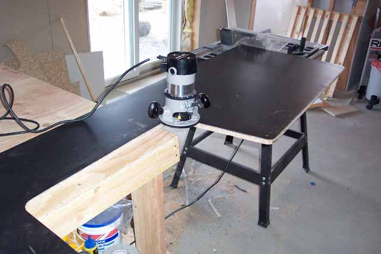
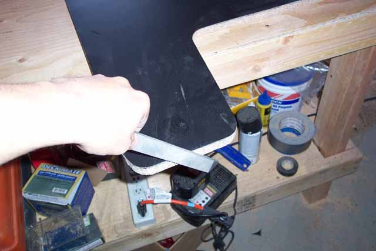
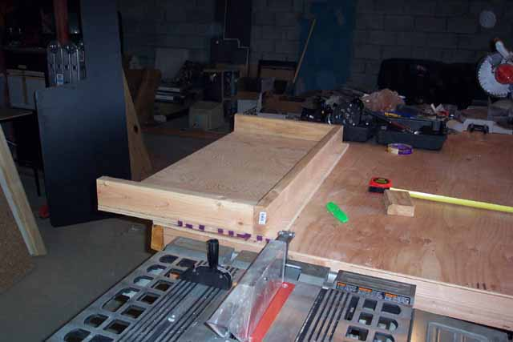
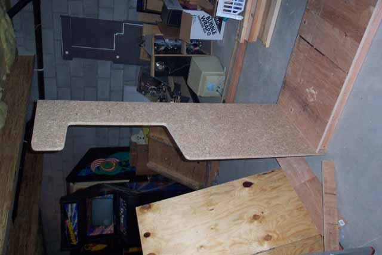

Once
the laminate has been trimmed away the side panel immediately starts to
take on a nice look and you can see how cool this kiosk is going to be
once finished. Next thing to do is
taking a medium to fine file, going on a 45 degree angle and pushing down
towards the laminate, not pulling away towards you (which may cause the
laminate to pull or chip at the edges) file away and excess and smooth
out the edges for a more finished look.

It's important to remember, take your time and enjoy the satisfaction of your work taking shape. Don't rush things or you may end up with something your not going to be completely satisfied with and you'll have burned a lot of weekend time and money and either you'll have to start over or give up and wind up with some funky looking stuff for the garbage man to pick up next Sunday.
Okay,
so here we are, a finished side panel, looking pretty sharp and really
looking close to what the original Colecovision kiosk photo looks like.
So finish up the other panel, put them off to the side and lets start working
on the base for the kiosk. Back to Home Depot again
for some more materials, this time we'll need a sheet of 4'X8' 3/4" plywood
and an 8' 2"x4" and some wood glue. Cost for those, $22.
Total cost so far: $82. Sounds like a lot for so
little at this point, but don't worry, the total cost will still be very
low and will still come in at about 1/5-1/8th the cost of trying to buy
an original, if you could find one. So back to work.....

Cutting
the plywood at Home Depot across for a 2' X 4' sheet, I now have the base
size of the kiosk, it will be 4' wide and the depth is already 2' (24")
since that's the depth we chose for the side panels.
Using the 2"x4" I left a 2" lip underneath the front of the base similar
to what is shown in the original Colecovison kiosk photo. Putting
some wood glue onto each piece of 2x4, I put them into place using 3" wood
screws from the top of the plywood down into the 2x4's.
Make sure the screws go into the top of the plywood completely flush as
we will be applying laminate (or contact paper, your choice) later on.
Then on the front 2x4 I screwed in 2 additional screws at each of its ends
into the 2 other 2x4's for additional support.
You don't have to bother putting another 2x4 across the back, its not needed
and noone will be seeing the back of the unit. This helps cut
down on costs and weight without sacrificing anything structurally.

Okay,
so as you can see, things are really starting to take shape.
Next challenge and one of the more difficult, cutting the groove for the
t-molding. The original kiosk used chrome t-molding.
I purchased 24' of it from Happ Controls (www.happcontrols.com) make sure
to get the 3/4" t-molding. You will
need a Dremel, the routing kit and a 1/8" router bit for this next task.
I made a few minor mistakes but was able to correct them later going back.
This will be the toughest part of the whole project, so you can make a
choice of cutting the groove or spending 1 or 2 hours and cutting the insert
off the back of the t-molding and gluing it on, this is the chickens way
out, but it can be done. I recommend taking some of the spare
particle board left over and doing some practicing before commiting to
working on the actual side panels.....